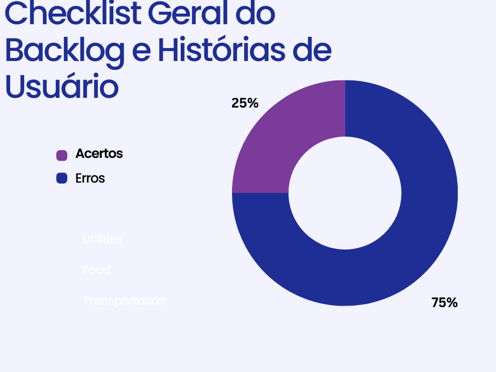
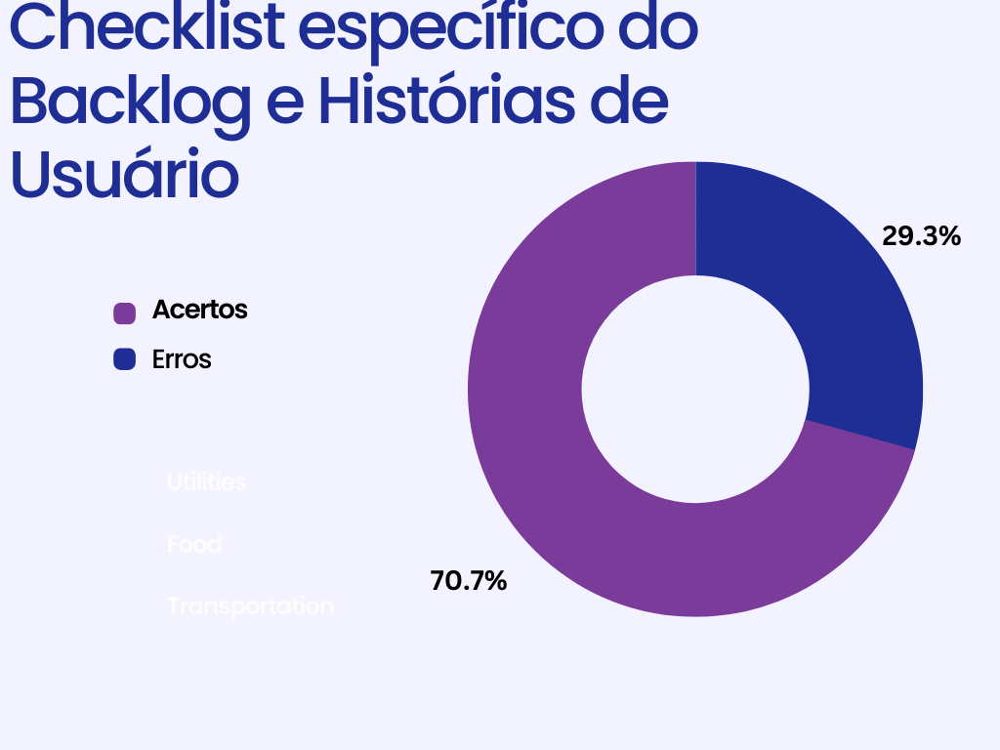
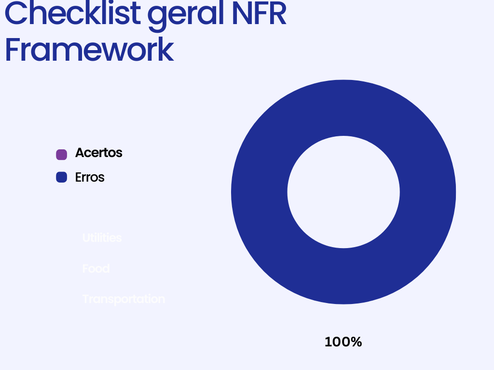
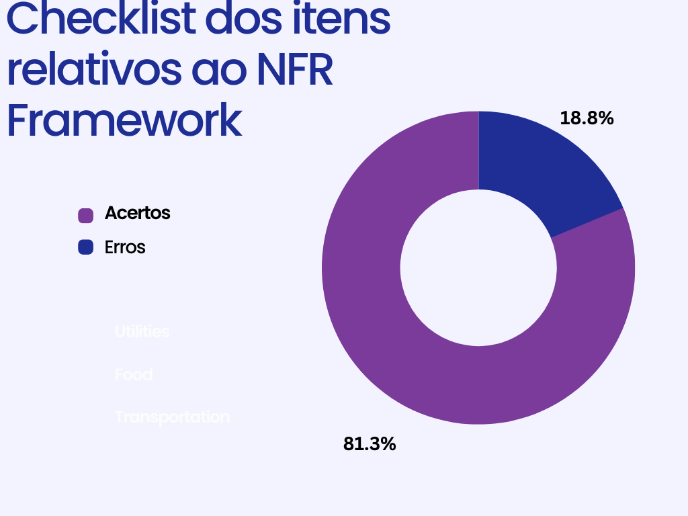

Product Backlog, Histórias de Usuário, NFR Framework
1. Introdução
Documento criado para a inspeção dos artefatos de modelagem ágil (Product Backlog, Histórias de usuário e NFR Framework) desenvolvidos pelo grupo do Star +.
2. Product Backlog e Histórias de Usuário
Foi decidido que a inspeção do Product Backlog seria feita junto com a das histórias de usuário, já que o grupo optou por criar um artefato único para ambas. Na tabela 1 é possível observar o checklist geral do artefato, relativo as padronizações e explicações do documento. Enquanto isso, a tabela 2 apresenta os itens específicos do Backlog e das Histórias de Usuário.Ademais, na Figura 1 abaixo veremos no formato de gráfico como se deu a propagação dos erros para o caso mais geral. Enquanto, na figura 2 veremos em sua versão mais específica
Tabela 1: Checklist Geral do Backlog e Histórias de Usuário
| Código | Item | Total | Sim | Não | Taxa de Erros | Tipos de erro | Pontos a serem ajustados |
|---|---|---|---|---|---|---|---|
| 1 | Histórico de versão padronizado, com autor e revisor para cada versão | 1 | 1 | 0 | 0.00% | --- | --- |
| 2 | Legendas e fontes de figuras e tabelas, além de citação das mesmas nos textos | 9 | 0 | 9 | 100.00% | As tabelas não tem fonte nem legenda | --- |
| 3 | Referências bibliográficas | 1 | 1 | 0 | 0.00% | --- | --- |
| 4 | Texto com introdução do artefato | 1 | 1 | 0 | 0.00% | --- | --- |
Fonte: Luciano de Freitas

Tabela 2: Checklist específico do Backlog e Histórias de Usuário
| Código | Item | Total | Sim | Não | Taxa de Erros | Tipos de erro | Pontos a serem ajustados |
|---|---|---|---|---|---|---|---|
| 1 | Títulos das histórias de usuário auto-explicativos | 46 | 0 | 46 | 100.00% | As histórias não possuem título, somente o código | --- |
| 2 | O “quem”, “o que” e o “por que” estão definidos na descrição da história de usuário? | 46 | 41 | 5 | 10.87% | "por que" de algumas histórias estão incompletos | US05, US07 e US15 estão com os "por que" confusos ou redundantes. US41 - ferramentas não é explicado. US 43 - " O que" e "por que" confusos |
| 3 | A História possui critérios de aceitação | 46 | 41 | 5 | 10.87% | Critérios confusos | US08 - o segundo critério é confuso. US09 - seria bom explicar o que são dados válidos. US12 - Critérios confusos de entender. US31 e 32 - Critério muito genérico. |
| 4 | Todas as histórias de usuários podem ser testadas? | 46 | 45 | 1 | 2.17% | história não pode ser testada | US12 não parece ter como ser testada. |
| 5 | As Histórias de Usuário seguem algum modelo ou padrão? | 1 | 1 | 0 | 0 | ||
| 6 | Participação do cliente e/ou persona na validação das histórias de usuário | 1 | 0 | 1 | 100.00% | Não há participação de nenhum cliente ou persona | |
| 7 | O backlog possui épicos e temas bem definidos e descritos? | 3 | 3 | 0 | 0.00% | ||
| 8 | Todas as features são condizentes com seus épicos? | 8 | 8 | 0 | 0.00% | ||
| 9 | Existe rastreabilidade com os requisitos elicitados? | 1 | 1 | 0 | 0.00% |
Fonte: Luciano de Freitas

3. NFR Framework
Como anteriormente, a tabela 3 apresenta o checklist geral do artefato, enquanto que a tabela 4 mostra a inspeção dos itens relativos ao NFR Framework.Ademais, na Figura 3 abaixo veremos no formato de gráfico como se deu a propagação dos erros para o caso mais geral. Enquanto, na figura 4 veremos em sua versão mais específica
| Código | Item | Total | Sim | Não | Taxa de Erros | Tipos de erro | Pontos a serem ajustados |
|---|---|---|---|---|---|---|---|
| 1 | Histórico de versão padronizado, com autor e revisor para cada versão | 1 | 1 | 0 | 0.00% | --- | --- |
| 2 | Legendas e fontes de figuras e tabelas, além de citação das mesmas nos textos | 9 | 9 | 0 | 0.00% | --- | |
| 3 | Referências bibliográficas | 1 | 1 | 0 | 0.00% | --- | --- |
| 4 | Texto com introdução do artefato | 1 | 1 | 0 | 0.00% | --- | --- |

| Código | Item | Total | Sim | Não | Taxa de Erros | Tipos de erro | Pontos a serem ajustados |
|---|---|---|---|---|---|---|---|
| 1 | Os softgoals condizem com o contexto? | 3 | 3 | 0 | 0.00% | ||
| 2 | Softgoals representam metas bem definidas? | 3 | 3 | 0 | 0.00% | ||
| 3 | Os impactos foram corretamente propagados? | 3 | 3 | 0 | 0.00% | ||
| 4 | Há uma legenda para cada elemento usado nos diagramas? | 7 | 4 | 3 | 42.86% | Elementos do diagrama sem legendas | Os elementos são: "S+" e "W+" |

4. Histórico de versão
| Data | Versão | Modificações | Autor(es) | Revisor(es) |
|---|---|---|---|---|
| 07/01/2023 | 1.0 | Criação do artefato: inspeção das histórias de usuário | Luciano | Lucas |
| 08/01/2023 | 1.1 | Tópicos de Backlog e NFR Framework | Luciano | Lucas |
| 12/01/2023 | 1.2 | Adiciona os gráficos e altera as descrições dos textos | Lucas | Luciano |
5. Bibliografia
SERRANO, Milene; SERRANO, Mauricio. Requisitos – Aula 17. 2019. Disponível em: link Acesso em: 07 jan. 2023
Projeto de Requisitos - TIKTOK 2022.1. Disponível em: link. Acesso em: 07 jan. 2023
Projeto de Requisitos - Youtube 2022.1. Disponível em: link. Acesso em: 08 jan. 2023